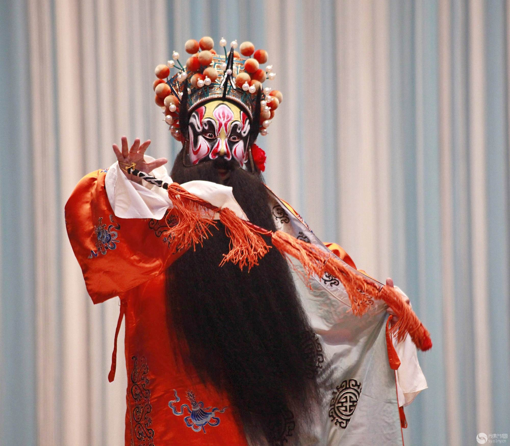

戏曲剧种

京剧
越剧
豫剧
黄梅戏
中国地域广袤，地理环境千差万别，孕育出了不同的文化景观，在此基础上形成了数以百计的剧种。With its vast territory and diverse geographical conditions, China has given rise to a myriad of cultural landscapes, upon which hundreds of different opera genres have emerged. 其中，京剧 Peking opera、豫剧 Henan opera、越剧 Shaoxing opera、评剧 pingju opera 和黄梅戏 Huangmei opera 被誉为“中国五大戏曲剧种”，流传广泛、受到普遍欢迎。